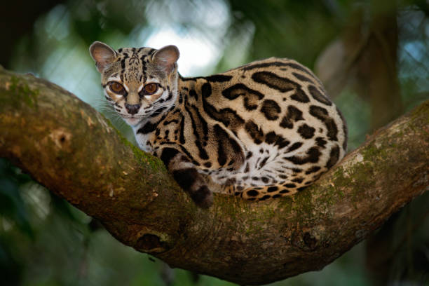

El Margaray (Leopardus wiedii), también conocido como maracayá, yaguatirica, caucel o gato tigre, es una especie de mamífero carnívoro de la familia Felidae ampliamente distribuido por América, desde México (con un registro en Texas, EE. UU.) hasta el sur de Sudamérica con poblaciones en Uruguay, Norte de Argentina y Sur de Brasil. Conocido como un gato nocturno, arborícola y solitario, vive principalmente en bosques caducifolios y perennifolios. Esta especie puede confundirse con el ocelote. Sin embargo, el ocelote tiene un tamaño y un peso mayores. Además, esta es una de las dos únicas especies con la capacidad de rotar el tobillo (la otra es la pantera nebulosa) para descender de los árboles con la cabeza hacia abajo como las ardillas. El nombre de «maracayá» procede del guaraní que significa gato. En México está considerado como en peligro de extinción.

Informacion del margaray
Caracteristicas
Es muy similar al ocelote, con menor tamaño (entre 40 y 60 cm de cabeza y cuerpo) y un peso promedio de 3,5 kg. Ojos grandes y cola muy larga (puede medir más del 70% de la longitud de la cabeza y cuerpo). Estas son características de su adaptación para la vida arbórea.